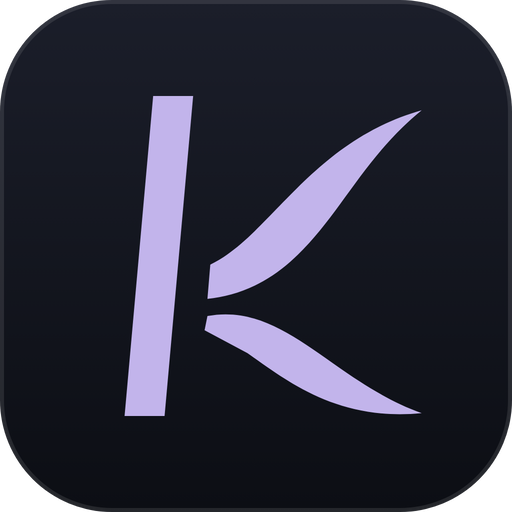
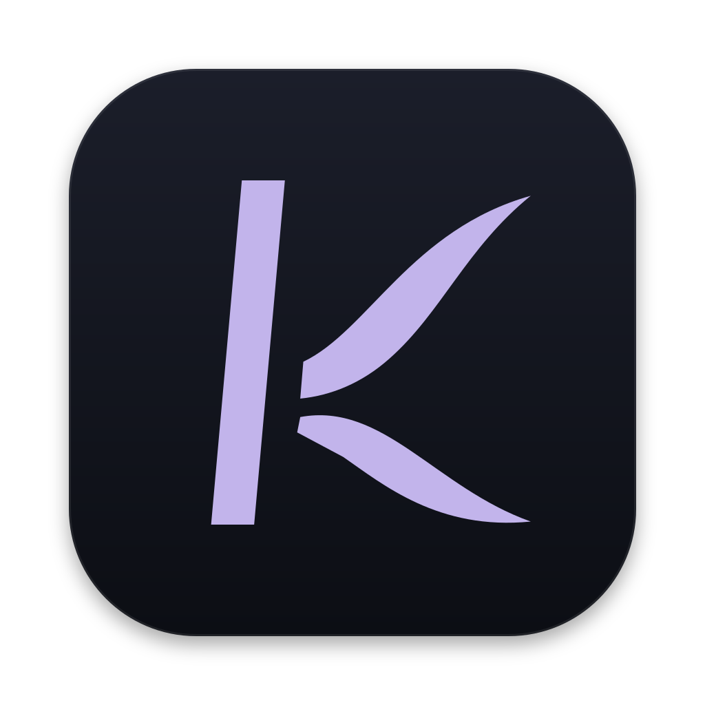
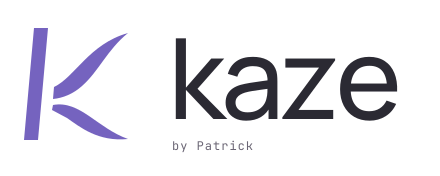

Kaze brand rollout, proposed
Mockup only. The new app icon puts the approved wind K (flat lilac, tapered stem, separated arms) on the Midnight tile; the website and README switch to the approved lockup.
App icon

Gradient violet K, edge-to-edge tile

Approved K in flat lilac, macOS grid (824 of 1024) with its shadow
In the Dock (64px)
Left of the running dot: today's icon (scaled to the same visual size) and the proposed one. Other tiles are neutral placeholders.
Small sizes
128
64
32
16
Windows taskbar (full-tile version)
Browser tab: the website's icon becomes the same tile.
Website header
 by PatrickDownload
by PatrickDownloadWebsite footer
Made for the long session.
Made for the long session.
README on GitHub

GitHub dark mode

GitHub light mode (deeper lilac, dark wordmark)
Today's README logo is a dark-only PNG; this picks the right version for each GitHub theme.